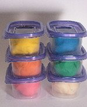

|
How to make Playdough is simple! Toddlers and children of all ages benefit from this great activity and can spend hours at a time with it. My favorite Playdough recipe is actually the easiest and most basic one.
Love Faith's Favorite Playdough Recipe
Get Ready!
Saucepan
2 cups flour
1 cup salt
1 teaspoon cream of tartar
2 tablespoons oil
1 teaspoon food coloring
2 cups water
Variation: for yummy-scented dough, add a bottle of vanilla or banana extract to the water.
Get Set!
Mix all the ingredients in the saucepan and make sure to stir constantly. Cook dough over on medium heat until the dough falls away from the sides of the pan. Remove the cooked dough and knead it for 3 to 5 minutes.
Go!

It’s Playdough time! This recipe makes very smooth and pliable dough that’s just right for little hands. Set Playdough out on a clean surface and enjoy the fun!
Make sure to store the dough in an air-tight container. There is no need to refrigerate it.
Make Playdough and other great activities
|